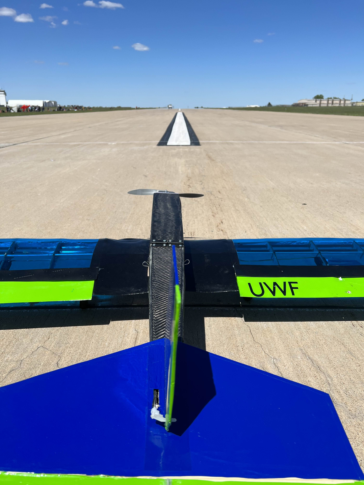

Project Overview
Objective: Design, build, and test a fully functional RC aircraft for the AIAA Design/Build/Fly competition. The plane, named “The Scorpion”, was engineered to complete four distinct missions including cargo transport, medical airlift simulation, and urban passenger operations, all under strict dimensional and performance constraints.
The aircraft had to fit within a 2.5 ft parking space without disassembly and take off in under 20 feet. Our design achieved a thrust-to-weight ratio of 1.09 and exceeded 30 mph flight speed, completing laps within 50 seconds during test flights.
Design and Development
The aircraft followed a low-wing monoplane configuration for stability and easy component access. The fuselage was constructed using carbon fiber composites via vacuum bag lamination, with balsa wood wing ribs laser-cut using university facilities. Three major prototypes were built and tested iteratively.
- Software Tools: SolidWorks (3D Modeling), ANSYS (Structural Analysis), MATLAB & Simulink (Performance Simulation), XFLR5 (Aerodynamics)
- Manufacturing Methods: 3D printing, laser cutting, composite lamination, epoxy assembly
- Testing: Static/dynamic thrust testing, wingtip load verification, and full flight testing
Performance and Results
- Top speed: 58 mph (FlySky 2826C V2 motor, 13x11 propeller)
- Takeoff distance: < 20 ft
- Flight time: 5 minutes (3200 mAh LiPo)
- Lap time: ~50 seconds fully loaded
- All tests confirmed structure passed the AIAA safety inspection (wingtip load & structural tests)
Key Contributions
- Led fabrication of carbon fiber fuselage and wing assembly
- Performed finite element analysis (FEA) in ANSYS for tip loading and stress validation
- Ran propulsion testing comparing Cobra 3515/14 and Flysky 2826C motors
- Integrated aerodynamic analysis from XFLR5 and structural results into performance simulations
Project Documentation
View the full report for detailed methodology, calculations, and testing outcomes.
📄 View Design Report (PDF)